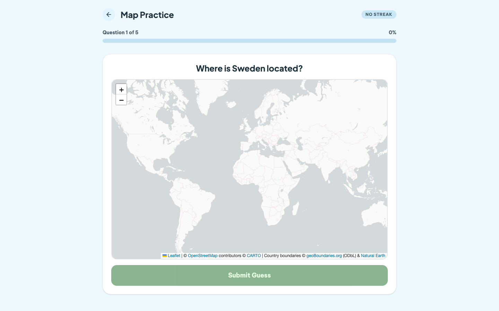

Daily challenge
Ten questions mixing flags, capitals, and map locations.
Daily geography · 10 questions
Flags, capitals, and maps in one short daily challenge. No account, no feed—just a useful ten minutes.

Ten questions mixing flags, capitals, and map locations.
Choose one topic and practise without affecting your streak.
Browse countries, capitals, regions, neighbours, and useful facts.
There is one fresh set waiting each day.
Work through flags, capitals, and map locations.
Review your result and keep a simple daily streak.